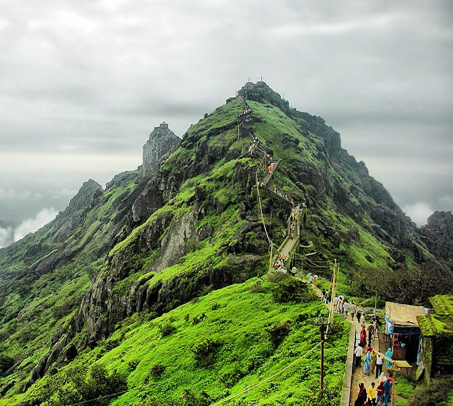
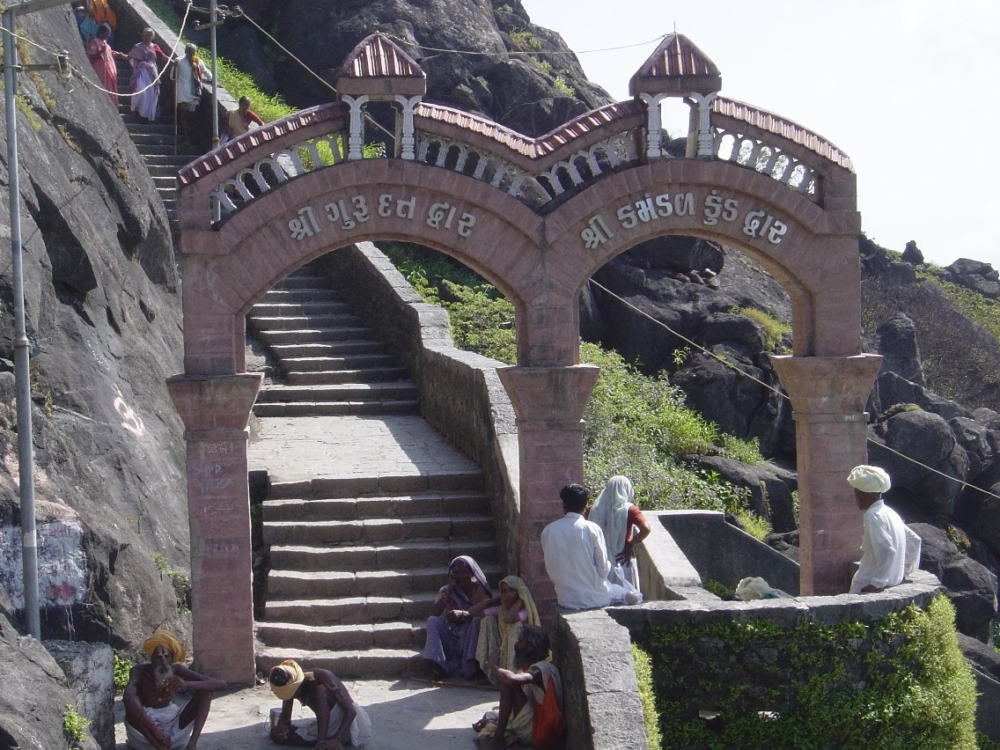

Where spiritual elevation meets the majestic heights of Girnar.
The arduous climb to Girnar Datta Mandir symbolizes a spiritual journey, where devotees seek the divine blessings of Lord Dattatreya amidst the serene heights.
Girnar, a mountain steeped in mythology, holds the sacred footprints of Lord Dattatreya, making it a revered pilgrimage site for devotees seeking spiritual enlightenment.
Lord Dattatreya, an embodiment of the trinity (Brahma, Vishnu, Shiva), is worshipped for his profound wisdom and blessings, offering solace to those who seek his divine grace.
Girnar Datta Mandir is a beacon of spiritual ascent, where devotees experience a profound connection with the divine amidst the breathtaking landscapes of Girnar.